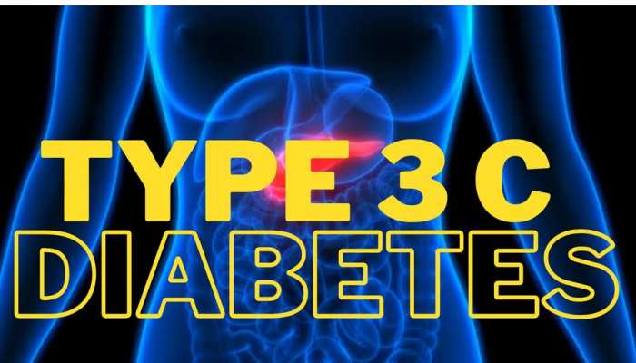

మధుమేహం
మధుమేహం అంటే ఏమిటి?
మధుమేహం అంటే ఏమిటి?
డయాబెటిస్ అనేది మీ బ్లడ్ షుగర్, గ్లూకోజ్ అని కూడా పిలువబడుతుంది, పెరుగుతుంది మరియు చాలా ఎక్కువగా ఉన్నప్పుడు సంభవించే వ్యాధి. ప్యాంక్రియాస్ తగినంత ఇన్సులిన్ను స్రవించనప్పుడు లేదా, కొన్ని సందర్భాల్లో, ఏమీ లేనప్పుడు లేదా శరీరం ఇన్సులిన్ ప్రభావాలకు నిరోధకతను కలిగి ఉన్నప్పుడు ఈ రకమైన మధుమేహం సంభవిస్తుంది. యువకులు మరియు వృద్ధులు ఇద్దరూ ఈ పరిస్థితికి గురవుతారు. చాలా రకాల మధుమేహం ప్రాథమిక లేదా దీర్ఘకాలిక పరిస్థితులు అని గమనించడం ముఖ్యం, అయితే అన్ని రకాల మధుమేహం మందులు మరియు/లేదా రోగి యొక్క జీవనశైలిలో మార్పులతో చికిత్స చేయగలదు.
గ్లూకోజ్ ప్రధానంగా ఆహారాలు మరియు పానీయాలలో కార్బోహైడ్రేట్ల నుండి పొందబడుతుంది, తదుపరి భాగాలలో మరింత వివరమైన సమాచారం అందించబడుతుంది. ఇది నిర్దిష్ట పనులను నిర్వహించడానికి మీ శరీరం ఉపయోగించే శక్తి యొక్క మూలం. గ్లూకోజ్ మీ రక్తం ద్వారా శక్తి కోసం వినియోగించబడే అన్ని శరీర కణాలకు రవాణా చేయబడుతుంది.
గ్లూకోజ్ మీ రక్తప్రవాహంలో ఉన్నప్పుడు, దాని గమ్యాన్ని చేరుకోవడానికి దానికి ఏదో ఒక కీ అవసరం. ఇన్సులిన్ అనేది క్రింది కీలో వివరించబడిన ఒక హార్మోన్. ప్యాంక్రియాస్ తగినంత ఇన్సులిన్ను ఉత్పత్తి చేయకపోతే లేదా మీ శరీరంలోని కణాలు సమర్ధవంతంగా ఉన్న ఇన్సులిన్ను ఉపయోగించకపోతే, గ్లూకోజ్ రక్తప్రవాహంలో సేకరిస్తుంది మరియు అధిక రక్తంలో చక్కెర (హైపర్గ్లైసీమియా) ఏర్పడుతుంది.
దీర్ఘకాలిక హైపర్గ్లైసీమియా, సంవత్సరాలుగా నిర్వహించబడితే, శరీరంలో సమస్యలకు దారితీస్తుంది, ఉదాహరణకు, గుండె జబ్బులు, నరాల బలహీనత మరియు కంటి సమస్యలు.
డయాబెటిస్కు డయాబెటిస్ మెల్లిటస్ అనే సాంకేతిక పేరు ఉంది. మరొక వ్యాధి దాని పేరులో మధుమేహం అనే పదాన్ని కలిగి ఉంది - దీనిని డయాబెటిస్ ఇన్సిపిడస్ అంటారు - కానీ పరిస్థితులు భిన్నంగా ఉంటాయి. వాటిని మధుమేహం అని పిలుస్తారు, ఎందుకంటే ఈ రెండూ తీపి పదార్ధాల కోరికను పెంచుతాయి మరియు తరచుగా టాయిలెట్ను సందర్శించడం. ఇంకా, వ్యాధిని రెండు ప్రధాన రకాలుగా వర్గీకరించవచ్చు, అయినప్పటికీ, డయాబెటిస్ మెల్లిటస్ కంటే డయాబెటిస్ ఇన్సిపిడస్ చాలా అరుదు.
మధుమేహంలో ప్రాథమికంగా నాలుగు వర్గాలు ఉన్నాయి :
టైప్ 1 మధుమేహం
టైప్ 2 మధుమేహం
టైప్ 3c మధుమేహం
గర్భధారణ మధుమేహం
టైప్ 1 మధుమేహం
- 1. నిర్వచనం :- టైప్ 1 మధుమేహం అనేది ఒక ప్రతిరక్షణ వ్యవస్థ సంబంధిత రోగం, ఇందులో శరీరానికి ఇన్సులిన్ హార్మోన్ ఉత్పత్తి చేసే లివర్ కణాలు (బీటా కణాలు) నాశనం అవుతాయి.
-2. లక్షణాలు :- తరచుగా ఉల్లాసం, ఎక్కువ తరచీ మూత్రపరిశ్రమ, అధిక తీయ్పు మరియు ఆకలితో కూడిన అనుభూతి, బరువు తగ్గడం
-3. కారణాలు :- ఈ రోగం సాధారణంగా జన్మనివారికి వస్తుంది, కానీ కింది కొన్ని కారకాలు ఉండవచ్చు :- జెనేటిక్ (జన్మజాత) & ప్రతిరక్షణ వ్యవస్థ లోపాలు
-4. చికిత్స :-
-ఇన్సులిన్ థెరపీ: శరీరంలో ఇన్సులిన్ యొక్క కొరతను పూరించేందుకు దినచర్యలో ఇన్సులిన్ ఇంజెక్షన్లు అవసరం.
- ఆహార నియంత్రణ: చక్కరపు ఆహారాన్ని నియంత్రించాలి.
- వ్యాయామం: వ్యాయామం ఆరోగ్యాన్ని మెరుగుపరుస్తుంది.
-5. నిర్వహణ :-
- రక్తంలో చక్కర స్థాయిలను నిరంతరం పర్యవేక్షించాలి.
- వైద్యుల సూచనల్ని పాటించాలి.
- ఆరోగ్యకరమైన జీవనశైలిని పాటించాలి.
ఇది చిన్న పిల్లల నుంచి పెద్దల వరకూ ఏ ఒక్కరికి కూడా రావచ్చు, మరియు దీన్ని సరైన దిశలో నిర్వహించడం ద్వారా జీవితం మేలు చేయవచ్చు.
వీడియో చూడటానికి క్రింది చిత్రాన్ని క్లిక్ చేయండి
టైప్-1 డయాబెటిస్ గురించి
టైప్ 2 మధుమేహం
-1. నిర్వచనం :-
టైప్ 2 మధుమేహం అనేది శరీరంలో ఇన్సులిన్ సరిగ్గా పనిచేయకపోవడం లేదా ఇన్సులిన్ అవసరాన్ని సరిగ్గా తీర్చలేకపోవడం వలన వచ్చే రోగం.
-2. లక్షణాలు :-
- అధిక తీయ్పు
- ఎక్కువగా ఆకలితో కూడిన అనుభూతి
- తరచుగా మూత్రపరిశ్రమ
- బరువు పెరగడం
- ఆవిష్కరణలు గమనించకపోవడం
-3. కారణాలు :-
- జెనేటిక్ (పారంపరిక)
- అధిక బరువు (ఊబకాయం)
- కనీసం శారీరక వ్యాయామం
- అప్రయోగిత ఆహారం
-4. చికిత్స :-
- ఆహార నియంత్రణ: గరిష్ట సానుకూలమైన ఆహారాన్ని తీసుకోవాలి.
- వ్యాయామం: రోజుకు కనీసం 30 నిమిషాల వ్యాయామం చేయాలి.
- మందులు: అవసరమైనంత వరకు డాక్టర్ సూచించిన మందులు తీసుకోవాలి.
- బరువును కంట్రోల్ చేసుకోవడం
-5. నిర్వహణ :-
- రక్తంలో చక్కర స్థాయిలను నిరంతరం పర్యవేక్షించాలి.
- ఆరోగ్యకరమైన జీవనశైలిని పాటించాలి.
- డాక్టర్ సలహా తీసుకోవాలి.
టైప్ 2 మధుమేహం సాధారణంగా పెద్దవారికి వచ్చే రోగం, కానీ జీవితశైలిలో మార్పులు చేస్తే దీన్ని నియంత్రించవచ్చు.
వీడియో చూడటానికి క్రింది చిత్రాన్ని క్లిక్ చేయండి
టైప్-2 డయాబెటిస్ గురించి
టైప్ 3c మధుమేహం
-1. నిర్వచనం :-
టైప్ 3c మధుమేహం అనేది ఇతర ఆరోగ్య సమస్యల వల్ల, ముఖ్యంగా పాంక్రియాస్ (పేగు) సంబంధిత రోగాల కారణంగా వచ్చేది.
ఇది పాంక్రియాస్ పరిమాణం లేదా పనితీరు ప్రభావితం చేసినప్పుడు ఉత్పత్తి అవుతుంది.
-2. కారణాలు :-
- పాంక్రియాటిక్ కేన్సర్ (పేగు క్యాన్సర్)
- క్రానిక్ పాంక్రియాటైటిస్ (పేగు सूజీ)
- పాంక్రియాస్ నుంచి ఇతర ముఖ్యమైన భాగాల యొక్క మోప్కు
-3. లక్షణాలు :-
- అధిక చక్కర స్థాయిలు
- అధిక ఆకలితో కూడిన అనుభూతి
- తరచుగా మూత్రపరిశ్రమ
- బరువు తగ్గడం
- శరీరాన్ని సరిగా పాడుచేసుకోలేకపోవడం
-4. చికిత్స :-
- మధుమేహం కంట్రోల్ కోసం ఇన్సులిన్ లేదా ఆహార నియంత్రణ
- పాంక్రియాస్ సంబంధిత సమస్యలు చికిత్స
- వైద్య సలహా మరియు నిరంతర పర్యవేక్షణ
-5. నిర్వహణ :-
- రక్తంలో చక్కర స్థాయిలను మితంగా పర్యవేక్షించాలి.
- ఆరోగ్యకరమైన ఆహారం, వ్యాయామం మరియు మందుల నియమాలు పాటించాలి.
- సంబంధిత ఆరోగ్య సమస్యలను సరిగ్గా చికిత్స చేయాలి.
టైప్ 3c మధుమేహం పాంట్రియాస్ సమస్యల కారణంగా వచ్చే మధుమేహం, కాబట్టి మానసికంగా మంచి ఆరోగ్యం మరియు సమయానికి చికిత్స అవసరం.
వీడియో చూడటానికి క్రింది చిత్రాన్ని క్లిక్ చేయండి

టైప్-3c డయాబెటిస్ గురించి
గర్భధారణ మధుమేహం
-1. నిర్వచనం :-
గర్భధారణ మధుమేహం అనేది గర్భిణి మహిళలకు గర్భం సాధించినప్పుడు ఏర్పడే మధుమేహం.
ఇది సాధారణంగా గర్భం సమాప్తికి ముందుగా లేదా గర్భసాధన సమయంలో తొలిసారిగా ఏర్పడుతుంది.
-2. లక్షణాలు :-
- అధిక తీయ్పు
- ఎక్కువ ఆకలితో కూడిన అనుభూతి
- తరచూ మూత్రపరిశ్రమ
- బరువు పెరగడం
-3. కారణాలు :-
- జెనెటిక్ (పారంపరిక)
- అధిక బరువు (ఊబకాయం)
- శారీరక వ్యాయామం లేకపోవడం
- గర్భధారణ సమయంలో హార్మోన్ల మార్పులు
-4. చికిత్స :-
- ఆహార నియంత్రణ: చక్కర మరియు కార్బోహైడ్రేట్లను నియంత్రించాలి.
- వ్యాయామం: రోజూ సక్రమ వ్యాయామం చేయాలి.
- మందులు: అవసరమైతే డాక్టర్ సూచించిన ఇన్సులిన్ లేదా ఇతర మందులు తీసుకోవాలి.
- గర్భవతి యొక్క రక్తంలో చక్కర స్థాయిలను మితంగా పర్యవేక్షించాలి.
-5. నిర్వహణ :-
- నిఘా: డాక్టర్ సూచనల ప్రకారం రెగ్యులర్ చెకప్లు చేయాలి.
- ఆరోగ్యకరమైన జీవనశైలిని పాటించాలి.
- సరైన ఆహారం మరియు వ్యాయామం పాటించాలి.
గర్భధారణ మధుమేహం సాధారణంగా గర్భం సార్థకమైన తర్వాత ఆందోళన లేకుండా పోతుంది, కానీ ఆ సమయంలో సరైన చికిత్స అవసరం. ఇది అంగసిద్ధి మరియు సంతాన ఆరోగ్యం కోసం ముఖ్యమైనది.
వీడియో చూడటానికి క్రింది చిత్రాన్ని క్లిక్ చేయండి
గర్భధారణ డయాబెటిస్ గురించి
కన్సల్టేషన్ కోసం

9014948217
బాలాజీ నాయక్ సార్ (వెల్నెస్ కోచ్)
చిరునామా :-
ప్లాట్ నెం 64, అయుజెరా ప్రైవేట్ లిమిటెడ్, అవ్వై నగర్, బారతీ నగర్, తూర్పు తాంబరం, జగన్జీవన్రామ్ కాలనీ, చెన్నై - 600073
హోమ్